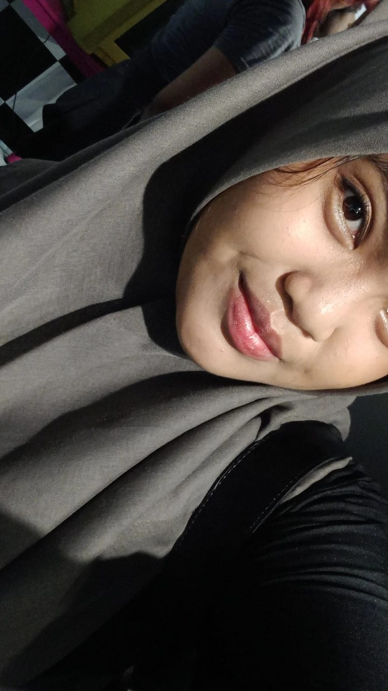
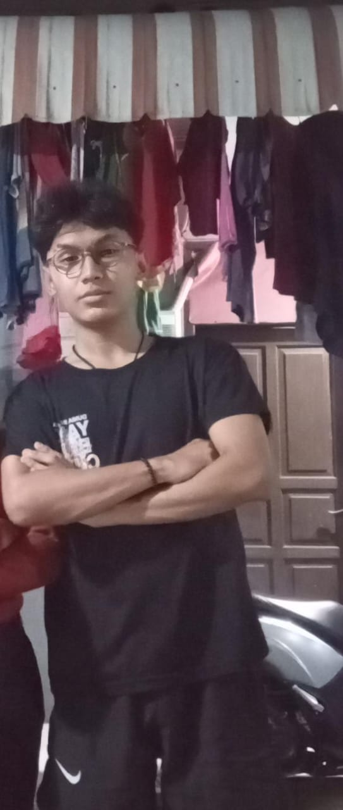
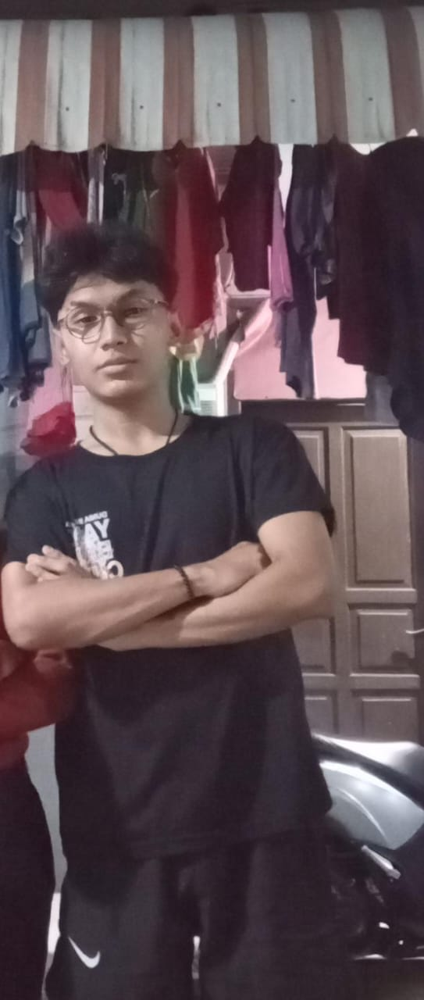
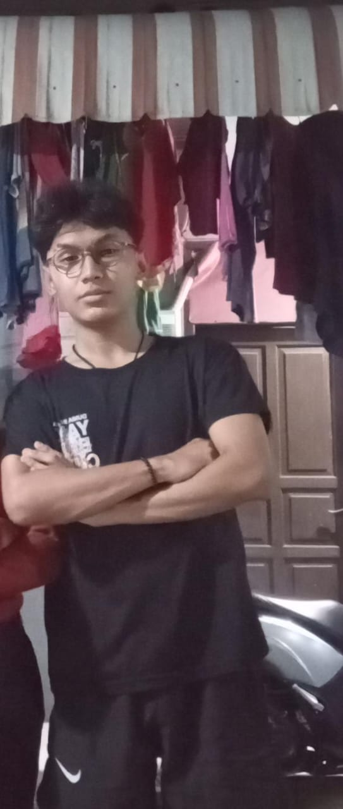

Selamat Datang!
‧•• ━━━━━━━━━━━━━━━ ••✎•• ━━━━━━━━━━━━━━━ ••
Liter-Action!

Silahkan memilih dari ketiga bagian ini.
Home Process Product
•• ━━━━━━━━━━━━━━━ ••●•• ━━━━━━━━━━━━━━━ ••
Kami Dari Grup Informatika Liter-Action! Ingin Memperkenalkan anggota kerja kami beserta Jobdesk kami , diantaranya -

Christian Alexander Kusuma Wijaya (Graphic Designer)
Graphic designer merancang tampilan website, menciptakan layout, memilih warna dan font, serta memastikan desain responsif untuk menghasilkan website yang menarik dan fungsional.

Aurelya Evelyn S.S (General Programmer)
General programmer web membangun situs fungsional dan responsif, mengelola tampilan, interaktivitas, server, dan database.

 

Airin Althafrunisa, Faihan Firdaus Aswan, Ryan Hidayat (Content Writer)
Content writer bertanggung jawab untuk menciptakan konten informatif dan menarik untuk website. Proses ini melibatkan riset, penulisan yang dioptimalkan untuk SEO, kolaborasi dengan desainer, dan pengembangan strategi distribusi untuk menjangkau audiens yang lebih luas.
Christian Alexander Kusuma Wijaya (Graphic Designer)
Graphic designer merancang tampilan website, menciptakan layout, memilih warna dan font, serta memastikan desain responsif untuk menghasilkan website yang menarik dan fungsional.
Aurelya Evelyn S.S (General Programmer)
General programmer web membangun situs fungsional dan responsif, mengelola tampilan, interaktivitas, server, dan database.

Airin Althafrunisa, Faihan Firdaus Aswan, Ryan Hidayat (Content Writer)
Content writer bertanggung jawab untuk menciptakan konten informatif dan menarik untuk website. Proses ini melibatkan riset, penulisan yang dioptimalkan untuk SEO, kolaborasi dengan desainer, dan pengembangan strategi distribusi untuk menjangkau audiens yang lebih luas.